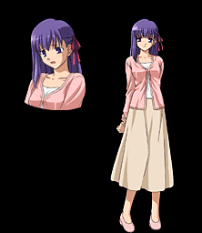

Мато Сакура (яп. 間桐 桜)

Близкая подруга Широ, заботившаяся о нем ещё когда тот пострадал в катастрофе 10 лет назад и помогающая ему по сей день. Её предки (династия Макири) были сильными магами, но со временем их род способности к магии утерял, то есть магические навыки Сакуры подавлены. Очень любит Широ, но боится ему в этом признаться. Сакура стала жертвой жестоких магических экспериментов своего деда, Мато Зокена. Из-за них, она теряет контроль над собой и обретает иные способности, отличные от способностей обычных магов: управление тенями, математическими закономерностями вещей, призрачными сущностями и т. д. Злоупотребление этими навыками может привести её к сумасшествию и потере контроля над собой. Рин Тосака и Мато Сакура — родные сестры, разлученные в детстве.
Неимеет слугу но была пленницой Кастером, чтобы раздобыть Святой Грааль
>>Кастер<<
Назад